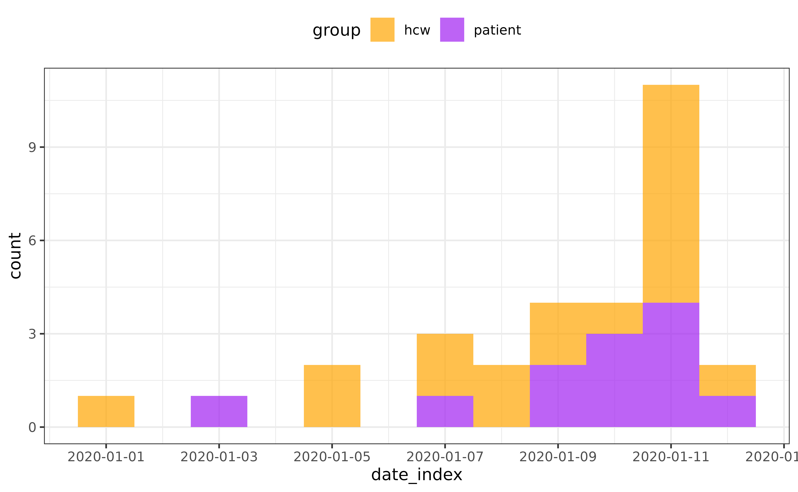
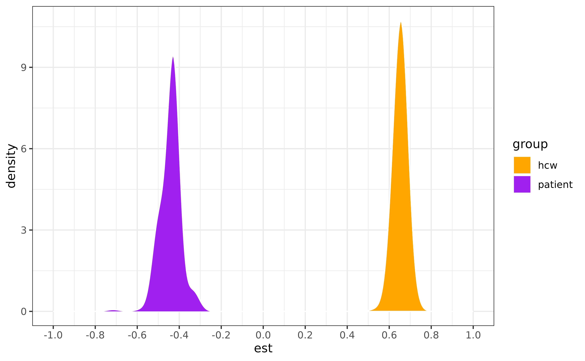

Extension with other packages
The o2ools package provides helper functions to process and summarise the results from outbreaker2 and to extend the analyses with other packages. In this vignette, we show how to use o2ools with linktree and mixtree.
linktree is a framework for estimating group transmission assortativity—the tendency for individuals to transmit within their own group rather than to others. The method is described in our paper, and briefly discussed on youtube.
mixtree is a package for comparing epidemic forests—collections of transmission trees. It can help assess the convergence of outbreaker2 results, and to compare the trees from different models.
linktree
A detailed vignette is available, so we do not cover it fully here. Instead, we show how to estimate assortativity from outbreaker2’s posterior trees. This requires knowledge of group sizes or their relative proportions. In our example, say the staff-to-patient ratio in the hospital is 1:4. It is also advised to analyse the transmission chains before saturation (i.e. the epidemic peak).
Estimate the peak date
We’ll estimate the peak date with the incidence2 package.
library(incidence2)
linelist$date_onset <- as.Date(linelist$onset, origin = "2020-01-01")
incid <- incidence2::incidence(linelist,
date_index = "date_onset",
groups = "group")
plot(incid, fill = "group") +
scale_fill_manual(values = c("hcw" = "orange", "patient" = "purple"))+
theme(legend.position = "top")
peak <- estimate_peak(regroup(incid), progress = FALSE)$observed_peak
peak
#> [1] "2020-01-11"Mask non-direct transmissions
Group transmission assortativity is estimated from direct
transmissions only. We can use the filter_chain function to
mask non-direct transmissions (i.e. where kappa>1).
out_direct <- filter_chain(
out,
param = "kappa",
thresh = 1,
comparator = "==",
target = "alpha" # keep alpha values where kappa == 1
)
trees <- get_trees(out_direct,
group = linelist$group,
onset = linelist$date_onset)
# keeps only rows where both onset dates are on or before peak
cut_trees <- lapply(trees, function(tree) {
tree |> filter(from_onset <= peak, to_onset <= peak)
})Estimate group transmission assortativity
For a given tree, we can estimate the groups’ transmission assortativity coefficients with:
library(linktree)
# staff-to-patient ratio
ratio <- c("hcw" = 1, "patient" = 3)
max_post <- trees[[which.max(out$post)]]
delta <- linktree::get_delta(from = max_post$from_group, to = max_post$to_group, f = ratio)
plot(delta)To account for uncertainty in who infected whom, we can compute the
posterior distribution of assortativity coefficients. This is done by
estimating delta for each tree in the posterior sample.
deltas <- lapply(trees, function(x) {
linktree::get_delta(from = x$from_group, to = x$to_group, f = ratio)
}) |>
bind_rows(.id = "tree")
ggplot(deltas) +
geom_density(aes(x = est, fill = group), bw = 0.03, color = "white") +
scale_x_continuous(limits = c(-1, 1), breaks = seq(-1, 1, 0.2)) +
scale_fill_manual(values = c("hcw" = "orange", "patient" = "purple")) +
theme_bw()
Convert delta to gamma for
interpretatibilty:
gammas <- deltas |>
group_by(group) |>
summarise(
mean = mean(est),
q025 = quantile(est, 0.025),
q975 = quantile(est, 0.975)
) |>
mutate(across(.cols = -group, ~ linktree::delta2gamma(.x)))
head(gammas)
#> # A tibble: 2 × 4
#> group mean q025 q975
#> <chr> <dbl> <dbl> <dbl>
#> 1 hcw 4.75 4 5.4
#> 2 patient 0.387 0.333 0.5Healthcare workers are nearly 5 times more likely to infect other
HCWs whereas patients are 2.6 (1/0.387) times more likely
to infect other HCWs.
mixtree
A detailed vignette is available, so we do not cover it fully here. Instead, we show how to use mixtree to assess the convergence of outbreaker2 results.
Run multiple chains of outbreaker2
library(outbreaker2)
data <- outbreaker_data(dna = fake_outbreak$dna, dates = linelist$onset, ctd = fake_outbreak$ctd, w_dens = fake_outbreak$w)
# Run multiple chains of outbreaker2 in parallel with furrr
library(furrr)
n_chains <- 5
plan(multisession, workers = n_chains) #make sure to set the number of workers to the number of cores on your machine
set.seed(123)
chains <- future_map(1:n_chains, function(i) {
out <- outbreaker(data = data)
#brunin
out[out$step>500, ]
}, .options = furrr_options(seed = TRUE))Extract trees
We now have 5 collections of transmission trees, one for each chain. We can use mixtree to test that the compared epidemic forests stem from the same generative process.
Chi-squared test
library(mixtree)
set.seed(123)
do.call(what = mixtree::tree_test, args = c(trees, list(
method = "chisq",
test_args = list(simulate.p.value = TRUE, B = 999)
)))
#>
#> Pearson's Chi-squared test with simulated p-value (based on 999
#> replicates)
#>
#> data: count data
#> X-squared = 78.327, df = NA, p-value = 1We used the chi-squared test to test the null hypothesis that the frequency of infector-infectee pairs is the similar between chains. A p-value of 1 indicates similarity between the chains, suggesting convergence. The chi-squared test allows for multiple introductions, unlike PERMANOVA.
PERMANOVA
PERMANOVA only accepts one introduction event, so we need to re-run
outbreaker2 allowing for a single introduction event only. We
can do this by setting the find_import argument to
FALSE.
set.seed(123)
chains <- future_map(1:n_chains, function(i) {
out <- outbreaker(
data = data,
config = outbreaker2::create_config(find_import = FALSE, move_kappa = FALSE)
)
#brunin
out[out$step>500, ]
}, .options = furrr_options(seed = TRUE))
trees <- lapply(chains, function(x) {
tree_list <- get_trees(x)
lapply(tree_list, function(tree) {
# Remove the imported case
tree[!is.na(tree$from), ]
})
})
set.seed(123)
do.call(what = mixtree::tree_test, args = c(trees, list(
method = "permanova",
test_args = list(permutations = 100)
)))
#> Permutation test for adonis under reduced model
#> Permutation: free
#> Number of permutations: 100
#>
#> (function (formula, data, permutations = 999, method = "bray", sqrt.dist = FALSE, add = FALSE, by = NULL, parallel = getOption("mc.cores"), na.action = na.fail, strata = NULL, ...)
#> Df SumOfSqs R2 F Pr(>F)
#> Model 4 3156 0.00493 1.1703 0.2772
#> Residual 945 637030 0.99507
#> Total 949 640185 1.00000PERMANOVA tests whether the variance in tree topology is similar between chains. A p-value >0.05 suggests that the topologies of the trees do not differ significantly across the 5 chains, suggesting convergence.